전자기사 (2020-09-26 기출문제)
1과목: 전기자기학
1. 서로 같은 2개의 구 도체에 동일양의 전하로 대전시킨 후 20cm 떨어뜨린 결과 구 도체에 서로 8.6×10-4N의 반발력이 작용하였다. 구 도체에 주어진 전하는 약 몇 C인가?
- 5.2×10-8
- 6.2×10-8
- 7.2×10-8
- 8.2×10-8
(정답률: 25%)

2. 반지름이 3cm인 원형 단면을 가지고 있는 환상 연철심에 코일을 감고 여기에 전류를 흘려서 철심 중의 자계 세기가 400AT/m가 되도록 여자할 때, 철심 중의 자속 밀도는 약 몇 Wb/m2 인가? (단, 철심의 비투자율은 400이라고 한다.)
- 0.2
- 0.8
- 1.6
- 2.0
(정답률: 23%)
3. 변위전류와 관계가 가장 깊은 것은?
- 도체
- 반도체
- 자성체
- 유전체
(정답률: 42%)
4. 유전율이 ε1, ε2인 유전체 경계면에 수직으로 전계가 작용할 때 단위 면적당 수직으로 작용하는 힘(N/m2)은? (단, E는 전계(V/m)이고, D는 전속밀도(C/m2)이다.)
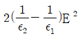
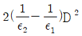
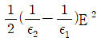
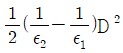
(정답률: 40%)
5. 임의의 형상의 도선에 전류 I(A)가 흐를 때, 거리 r(m)만큼 떨어진 점에서의 자계의 세기 H(AT/m)를 구하는 비오-사바르의 법칙에서, 자계의 세기 H(AT/m)와 거리 r(m)의 관계로 옳은 것은?
- r에 반비례
- r에 비례
- r2에 반비례
- r2에 비례
(정답률: 32%)
6. 진공 중에서 2m 떨어진 두 개의 무한 평행도선에 단위 길이 당 10-7N의 반발력이 작용할 때 각 도선에 흐르는 전류의 크기와 방향은? (단, 각 도선에 흐르는 전류의 크기는 같다.)
- 각 도선에 2A가 반대 방향으로 흐른다.
- 각 도선에 2A가 같은 방향으로 흐른다.
- 각 도선에 1A가 반대 방향으로 흐른다.
- 각 도선에 1A가 같은 방향으로 흐른다.
(정답률: 28%)
7. 다음 정전계에 관한 식 중에서 틀린 것은? (단, D는 전속밀도, V는 전위, ρ는 공간(체적)전하밀도, ε은 유전율이다.)
- 가우스의 정리 : div D = ρ
- 포아송의 방정식 :
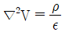
- 라플라스의 방정식 : ∇2V = 0
- 발산의 정리 :
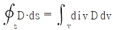
(정답률: 32%)
8. 영구자석 재료로 사용하기에 적합한 특성은?
- 잔류자기와 보자력이 모두 큰 것이 적합하다.
- 잔류자기는 크고 보자력은 작은 것이 적합하다.
- 잔류자기는 작고 보자력은 큰 것이 적합하다.
- 잔류자기와 보자력이 모두 작은 것이 적합하다.
(정답률: 40%)
9. 자기 인덕턴스(self inductance) L(H)을 나타낸 식은? (단, N은 권선수, I는 전류(A), ø는 자속(Wb), B는 자속밀도(Wb/m2), H는 자계의 세기(AT/m), A는 벡터 퍼텐셜(Wb/m), J는 전류밀도(A/m2)이다.)
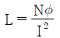
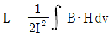
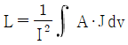
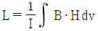
(정답률: 23%)
10. 환상 솔레노이드 철심 내부에서 자계의 세기(AT/m)는? (단, N은 코일 권선수, r은 환상 철심의 평균 반지름, I는 코일에 흐르는 전류이다.)
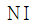
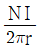
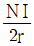
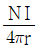
(정답률: 40%)
11. 질량(m)이 10-10 kg 이고, 전하량(Q)이 10-8C인 전하가 전기장에 의해 가속되어 운동하고 있다. 가속도가 a = 102i + 102j (m/s2)일 때 전기장의 세기 E(V/m)는?
- E = 104i + 105j
- E = i + 10j
- E = i + j
- E = 10-6i + 10-4j
(정답률: 35%)
12. 반지름이 a(m), b(m)인 두 개의 구 형상 도체 전극이 도전율 k인 매질 속에 거리 r(m) 만큼 떨어져 있다. 양 전극 간의 저항(Ω)은? (단, r》a, r》b 이다.)
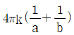
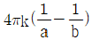
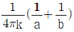
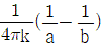
(정답률: 31%)
13. 저항의 크기가 1Ω인 전선이 있다. 전선의 체적을 동일하게 유지하면서 길이를 2배로 늘였을 때 전선의 저항(Ω)은?
- 0.5
- 1
- 2
- 4
(정답률: 33%)
14. 내부 원통의 반지름이 a, 외부 원통의 반지름이 b인 동축 원통 콘덴서의 내외 원통 사이에 공기를 넣었을 때 정전용량이 C1이었다. 내외 반지름을 모두 3배로 증가시키고 공기 대신 비유전율이 3인 유전체를 넣었을 경우의 정전용량 C2는?
- C2 = C1/9
- C2 = C1/3
- C2 = 3C1
- C2 = 9C1
(정답률: 32%)
15. 정전계 내 도체 표면에서 전계의 세기가
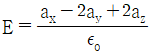
(V/m)일 때 도체 표면상의 전하 밀도 ρs(C/m2)를 구하면? (단, 자유공간이다.)- 1
- 2
- 3
- 5
(정답률: 22%)
16. 전류 I가 흐르는 무한 직선 도체가 있다. 이 도체로부터 수직으로 0.1m 떨어진 점에서 자계의 세기가 180 AT/m이다. 도체로부터 수직으로 0.3m 떨어진 점에서 자계의 세기(AT/m)는?
- 20
- 60
- 180
- 540
(정답률: 41%)
17. 자속밀도가 10Wb/m2인 자계 내에 길이 4cm의 도체를 자계와 직각으로 놓고 이 도체를 0.4초 동안 1m씩 균일하게 이동하였을 때 발생하는 기전력은 몇 V 인가?
- 1
- 2
- 3
- 4
(정답률: 26%)
18. 길이가 l(m), 단면적의 반지름이 a(m)인 원통이 길이 방향으로 균일하게 자화되어 자화의 세기가 J(Wb/m2)인 경우, 원통 양단에서의 자극의 세기 m(Wb)은?
- alJ
- 2πalJ
- πa2J
- J/πa2
(정답률: 28%)
19. 자기회로와 전기회로에 대한 설명으로 틀린 것은?
- 자기저항의 역수를 컨덕턴스라 한다.
- 자기회로의 투자율은 전기회로의 도전율에 대응된다.
- 전기회로의 전류는 자기회로의 자속에 대응된다.
- 자기저항의 단위는 AT/Wb이다.
(정답률: 32%)
20. 진공 중에서 전자파의 전파속도(m/s)는?
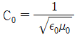
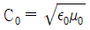
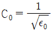
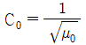
(정답률: 39%)
2과목: 회로이론
21. 다음 회로의 스위치 k를 t = 0s에 닫았을 때 초기 전류 i(0+)는 몇 A 인가? (단, 모든 초기 값은 0 이다.)
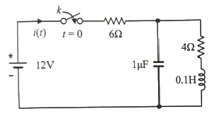
- 1.2
- 2
- 3
- 3.2
(정답률: 27%)
22. 다음 회로가 정저항 회로가 되려면 L은 몇 H인가? (단, R = 20Ω. C = 200㎌)
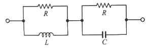
- 0.08
- 0.8
- 1
- 10
(정답률: 33%)
23. 내부 임피던스 Zg = 0.2+j2(Ω)인 발전기에 임피던스 Zl = 2.0+j3(Ω)인 선로를 연결하여 부하에 전력을 공급할 때 부하에 최대 전력이 전송되기 위한 부하 임피던스는 몇 Ω 인가?
- 1.8 + j
- 1.8 - j
- 2.2 + j5
- 2.2 – j5
(정답률: 29%)
24. 그림의 회로에서 입·출력 간의 4단자 정수(A, B, C, D 파라미터) 중 틀린 것은?
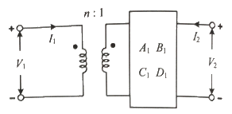
- A = nA1
- B = nB1
- C = C1/n
- D = nD1
(정답률: 19%)
25. 그림 (a)의 회로를 그림 (b)와 같은 테브닌 등가회로로 변경했을 때, 테브닌 등가전압 Vth(V)와 테브닌 등가저항 Rth(Ω)는 각각 약 얼마인가?
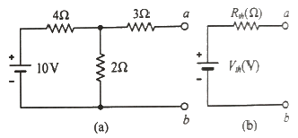
- Vth = 3.33 V, Rth = 4.33 Ω
- Vth = 3.33 V, Rth = 9 Ω
- Vth = 10 V, Rth = 4.33 Ω
- Vth = 10 V, Rth = 9 Ω
(정답률: 27%)
26. v(t) = 100sinωt(V)이고,
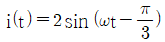
(A)에 대한 평균전력(W)은?- 25
- 50
- 75
- 125
(정답률: 29%)
27. RLC가 직렬로 연결될 때 공진현상이 일어날 조건은? (단, ω는 각 주파수이다.)
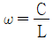
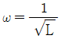
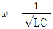
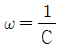
(정답률: 38%)
28.
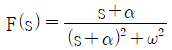
의 라플라스 역변환은?- eat sinωt
- e-at sinωt
- eat cosωt
- e-at cosωt
(정답률: 31%)
29. 다음 중 4단자 회로망에서 가역정리가 성립되는 조건이 아닌 것은? (단, Z12, Z21은 각각 입력과 출력 개방 전달 임피던스이고, Y12, Y21는 각각 입력과 출력 단락 전달 어드미턴스이고, h12, h21는 각각 입력 개방 전압 이득과 출력 단락 전류 이득이고, A, B, C, D는 각각 출력 개방 전압 이득, 출력 단락 전달 임피던스, 출력 개방 전달 어드미턴스, 출력 단락 전류 이득이다.)
- Z12 = Z21
- Y12 = Y21
- h12 = h21
- AD – BC = 1
(정답률: 30%)
30. 그림의 T형 회로에서 4단자 정수 중 A는?
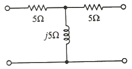
- j5
- 10 - j5
- 1 - j
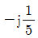
(정답률: 29%)
31. f(t) = sinωt + 2cosωt의 라플라스 변환은?
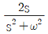
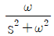
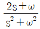
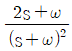
(정답률: 30%)
32. 기본파의 10%인 제3고조파와 20%인 제5고조파를 포함하는 전압파의 왜형률은 약 얼마인가?
- 0.22
- 0.31
- 0.42
- 0.5
(정답률: 26%)
33. 인덕턴스 L과 커패시턴스 C가 병렬로 구성된 2단자 회로망에서 리액턴스 함수가
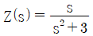
으로 표현된다. 2단자망의 인덕턴스 L(H)과 커패시턴스 C(F)는?- L = 1/3, C= 1
- L = 1, C= 1/3
- L = 3, C= 1
- L = 1, C= 3
(정답률: 25%)
34. 그림의 정편하 v(t) = Vsin(ωt+ø)의 주기 T(s)는?
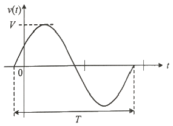
- 2πω
- 2πf
- ω/2π
- 2π/ω
(정답률: 26%)
35. 그림과 같은 4단자 회로망에서 영상 임피던스 Z01은 몇 Ω 인가?
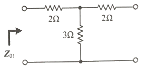
- 2
- 3
- 4
- 5
(정답률: 23%)
36. 무효전력이 Q(var)일 때 역률이 0.8이라면 피상전력(VA)은?
- 0.6Ω
- 0.8Ω
- Q/0.6
- Q/0.8
(정답률: 24%)
37. 다음 보기에서 서로 쌍대가 되는 묶음으로 나열한 것은?
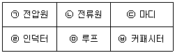
- ㉠ - ㉢, ㉡ - ㉤, ㉣ - ㉥
- ㉠ - ㉡, ㉢ - ㉥, ㉣ - ㉤
- ㉠ - ㉡, ㉢ - ㉤, ㉣ - ㉥
- ㉠ - ㉢, ㉣ - ㉤, ㉡ - ㉥
(정답률: 40%)
38. 어떤 선형시스템의 전달함수가
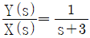
일 때, 이 시스템의 단위계단 응답(unit-step response)은?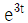
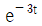
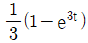
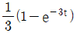
(정답률: 25%)
39. RL 직렬회로의 과도응답에서 시정수(s)는?
- L
- R
- L/R
- R/L
(정답률: 35%)
40. 자기 인덕턴스가 각각 10H, 5H인 두 코일을 직렬로 연결하고 인덕턴스를 측정하였을 때 20H라고 하면, 두 코일 간의 상호 인덕턴스 M은 몇 H 인가?
- 2.5
- 3
- 3.5
- 5
(정답률: 28%)
3과목: 전자회로
41. 공통 소스 증폭기의 출력 전압에 대한 설명으로 가장 적절한 것은?
- 입력 전압과 180°의 위상차가 있다.
- 소스에서 입력하여 드레인에서 출력을 얻는다.
- 드레인에서 입력하여 소스에서 출력을 얻는다.
- 게이트에서 입력하여 소스에서 출력을 얻는다.
(정답률: 27%)
42. 다음과 같은 특성곡선을 갖는 트랜지스터에서 A급으로 작동할 때 VCE=5V 에 대한 근사적인 β값은?
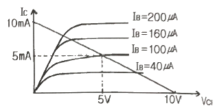
- 10
- 25
- 50
- 100
(정답률: 29%)
43. 다음 회로의 입력에 구형파를 인가할 때 출력의 최대 양전압의 크기는? (단, 다이오드 순방향 전압강하는 0.7V 이다.)
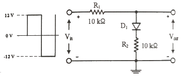
- 5.63V
- 6.35V
- 4.97V
- 6.70V
(정답률: 22%)
44. 다음 회로에서 고주파 차단주파수에 영향을 주는 커패시터로 옳은 것은?
- C1
- C2
- C3
- CF
(정답률: 25%)
45. RLC 병렬 공진회로에서 선택도(Q)를 높게 하는 방법으로 옳은 것은?
- R 값을 크게 한다.
- C 값을 작게 한다.
- L 값을 크게 한다.
- RLC에 영향이 없다.
(정답률: 29%)
46. 다음 중 연산증폭기를 이용한 비반전 증폭기는 어떤 귀환(feedback)으로 동작하는가? (단, 입력접속방식-출력접속방식이다.)
- 직렬-직렬 귀환
- 직렬-병렬 귀환
- 병렬-직렬 귀환
- 병렬-병렬 귀환
(정답률: 27%)
47. 이상적인 연산증폭기의 특성으로 틀린 것은?
- 전압이득이 무한대이다.
- 대역폭이 무한대이다.
- 입력 임피던스가 0 이다.
- 출력 임피던스가 0 이다.
(정답률: 35%)
48. 다음 RC회로에 압력 Vi가 공급될 때 출력 Vo로 가장 적절한 것은?
(정답률: 33%)
49. 다음 회로에서 Ri = 1kohm 이고, Rf = 4kohm 일 때, 전압이득 는?
- 1/5
- 1/4
- 5
- 4
(정답률: 36%)
50. A급 증폭기에 대한 설명 중 틀린 것은?
- 충실도가 좋다.
- 효율은 50% 이하이다.
- 차단(cut off) 영역 부근에서 동작한다.
- 평균 전력손실이 B급이나 C급에 비해 크다.
(정답률: 27%)
51. 사이리스터(thyristor)의 구조에 대한 설명으로 가장 옳은 것은 무엇인가?
- 1개의 pn접합구조를 가진다.
- 2개의 pn접합구조를 가진다.
- 3개의 pn접합구조를 가진다.
- 4개의 pn접합구조를 가진다.
(정답률: 29%)
52. 트랜지스터에 관한 설명 중 옳은 것은?
- β값은 온도에 따라 변하지 않는다.
- 트랜지스터에 최대 정격전력(PD(max))은 낮은 온도에서 증가한다.
- 최대 정격전력은 컬렉터 이미터 전압의 최대값(VCE(max))과 최대 컬렉터 전류(IC(max))의 곱이다.
- 최대 정격전력은 트랜지스터가 견딜 수 잇는 최대전력이므로 상온보다 높은 온도에서 규정된다.
(정답률: 10%)
53. 변조도가 60%인 AM에서 반송파의 평균출력이 500mW 일 때, 피변조파의 평균 출력은?
- 180mW
- 354mW
- 420mW
- 590mW
(정답률: 21%)
54. PN접합 다이오드가 순방향 바이어스될 때, 전류는?
- 전류는 정공전류뿐이다.
- 전류는 전자전류뿐이다.
- 전류가 흐르지 않는다.
- 전류는 전자와 정공에 의해서 만들어진다.
(정답률: 33%)
55. 다음 회로의 입력에 정현파를 인가하였을 때 출력파형으로 가장 적합한 것은? (단, ZD는 이상적인 제너다이오드이다.)
- 구형파
- 여현파
- 삼각파
- 톱니파
(정답률: 27%)
56. 반송파 전력이 40kW 일 때 75%로 진폭 변조하고 SSB 방식으로 송신하고자 할 때 측파대의 전력은 약 얼마인가?
- 5.6 kW
- 8.1 kW
- 23 kW
- 31 kW
(정답률: 16%)
57. 적분회로로 사용이 가능한 회로는?
- 고역통과 RC 회로
- 대역통과 RC 회로
- 대역소거 RC 회로
- 저역통과 RC 회로
(정답률: 30%)
58. 증폭기에서 주파수 대역폭을 반으로 줄이면 전압이득은 어떻게 되는가?
- 1/4로 감소
- 1/2로 감소
- 2배로 증가
- 4배로 증가
(정답률: 22%)
59. 트랜지스터의 컬렉터 누설전류가 주위 온도 변화로 1.2μA에서 239.2μA로 증가되었을 때, 컬렉터의 전류가 1mA라면 안정도 계수 S는? (단, 소수점 둘째자리에서 반올림한다.)
- 1.2
- 2.2
- 4.2
- 6.3
(정답률: 18%)
60. 다음 회로에서 베이스 전류 IB는 얼마인가? (단, β=99, VBE=0.7V, VCC=20V, VBB=10.7V 이다.)
- 10 μA
- 50 μA
- 100 μA
- 500 μA
(정답률: 17%)
4과목: 물리전자공학
61. 이미터 플로어(emitter follower)에 달링턴 접속을 하는 주된 이유는?
- 입력 저항을 높이기 위해서
- 전류 이득을 낮추기 위해서
- 전압 이득을 높이기 위해서
- 출력 저항을 높이기 위해서
(정답률: 21%)
62. 전자파의 파장이 무한대일 경우 전자의 상태는 어떠한가?
- 직선운동상태
- 원운동상태
- 정지상태
- 나선운동상태
(정답률: 19%)
63. 페르미-디랙(Fermi-Dirac) 분포에 대한 설명이 틀린 것은?
- 고체 내의 전자는 pauli의 배타원리의 지배를 받는다.
- 전자는 페르미 준위 이상의 에너지 대역에만 존재한다.
- 분포형태는 금속의 온도에 변화한다.
- 도체가 가열될 때 전자는 분자 비열 용량에 거의 영향을 주지 못한다.
(정답률: 26%)
64. 실리콘 PN 접합에서 단면적이 0.1mm2, 공간전하 영역 폭이 2×10-4cm 일 때 공간전하 용량은 얼마인가? (단, Si의 비유전율은 12, εo = 8.85×10-12F/m)
- 5.31 pF
- 53.1 μF
- 0.531 μF
- 5.31 μF
(정답률: 21%)
65. 진성 반도체에서 전자나 전공의 농도가 같다고 할 때, 전도대의 준위를 0.4eV일 때, Fermi 준위는 몇 eV인가?
- 0.32
- 0.6
- 1.2
- 1.44
(정답률: 20%)
66. 주양자수 n=3인 전자각 M에 들어갈 수 있는 최대 전자수는?
- 2
- 8
- 18
- 32
(정답률: 26%)
67. 다음 중 BJT의 형태에 속하는 것은?
- NPN 형
- DIAC 형
- CMOS 형
- TRIAC 형
(정답률: 27%)
68. Fermi 준위에서의 Fermi-Dirac의 확률 분포함수 f(E)의 값은?
- 1/3
- 1/2
- 1
- 2
(정답률: 30%)
69. 1쿨롱(Coulomb)의 전하량은 몇 개의 전자가 필요한가? (단, e = 1.602×10-19C)
- 6.24×1014
- 6.24×1016
- 6.24×1018
- 6.24×1020
(정답률: 35%)
70. 음전하를 금속표면 근처에 가져오면 양전하가 금속에 유기되고, 이것으로 인한 영상력(image force)이 인가전계와 결합되면 일함수는 약간 감소하는데, 이와 같이 전위장벽이 저하하는 현상은?
- Zener 효과
- Piezo 효과
- Schottky 효과
- Webster 효과
(정답률: 28%)
71. 접합형 다이오드가 점접촉 다이오드보다 우수한 점으로 틀린 것은?
- 잡음이 적다.
- 전류 용량이 크다.
- 충격에 강하다.
- 주파수 특성이 좋다.
(정답률: 26%)
72. PN 접합 다이오드에 역방향 바이어스를 인가하였을 때 일어나는 현상이 아닌 것은?
- 공간 전하 영역 폭이 넓어진다.
- 전위장벽이 높아진다.
- 항복전압 이상을 인가해주면 소자가 파괴될 수 있다.
- 이온화가 감소한다.
(정답률: 23%)
73. 어떠한 물질에서 전자를 방출시키는 직접적인 방법으로 틀린 것은?
- 그 물질을 압축시킨다.
- 그 물질에 빛을 조사한다.
- 그 물질에 전자를 충돌시킨다.
- 그 물질에 열을 가한다.
(정답률: 33%)
74. 온도가 상승함에 따라 불순물 반도체의 Fermi 준위는?
- 전도대 쪽으로 접근한다.
- 가전자대 쪽으로 접근한다.
- 금지대 중앙으로 접근한다.
- 변함없다.
(정답률: 22%)
75. 실리콘다이오드가 20℃일 때 역포화 전류가 2nA라면, 100℃일 때 흐르는 역포화 전류는 몇 nA인가?
- 228
- 256
- 362
- 512
(정답률: 23%)
76. 300eV로 가속된 전자가 0.01Wb/m2 인 균등한 자계 중에 자계의 방향가 60°의 각도를 이루며 사출되었을 때 전자가 그리는 궤도의 직경은? (단, 전자의 전하 e = 1.602×10-19(C), 전자의 질량 m = 9.106×10-31(kg)이다.)(문제 오류로 가답안 발표시 1번으로 발표되었지만 확정답안 발표시 모두 정답처리 되었습니다. 여기서는 가답안인 1번을 누르면 정답 처리 됩니다.)
- 약 5.84×10-3m
- 약 5.84×10-2m
- 약 2.92×10-2m
- 약 2.92×10-3m
(정답률: 27%)
77. 외인성 반도체(n형)에서 도너(Donor) 에너지 레벨의 위치는?
- 전도대 바로 아래에 위치해 있다.
- 가전자대 바로 아래에 위치해 있다.
- 금지대 바로 아래에 위치해 있다.
- 전도대 중앙에 위치해 있다.
(정답률: 30%)
78. 초전도 현상에 관한 설명으로 옳은 것은?
- 물질의 격자 진동이 심하게 되어 파괴된다.
- 저항이 무한으로 커짐에 따라 전류가 흐르지 않는다.
- 저온에서는 격자진동이 저하되어 결국 저항이 0으로 된다.
- 전자의 이동도 μ가 전계 강도 E의 평방근에 비례한다.
(정답률: 29%)
79. 다음 중 캐리어의 확산 거리에 대한 설명으로 옳은 것은?
- 확산계수와는 무관하다.
- 캐리어의 이동도에만 관계있다.
- 캐리어의 수명시간에만 관계있다.
- 캐리어의 수명시간과 이동도에 관계있다.
(정답률: 29%)
80. MOSFET 와 BJT의 최상의 특성만을 결합시킨 형태의 반도체 소자는?
- IGBT
- SCR
- TRIAC
- GTO
(정답률: 20%)
5과목: 전자계산기일반
81. 10진수 0.4375를 2진수로 변환한 것은?
- (0.1011)2
- (0.1101)2
- (0.1110)2
- (0.0111)2
(정답률: 22%)
82. C 언어의 특징 중 틀린 것은?
- C언어 자체에는 입·출력 기능을 제공하는 함수가 있다.
- C는 포인터의 주소를 계산할 수 있다.
- 객체지향 언어이다.
- 데이터에는 반드시 형(type) 선언을 해야 한다.
(정답률: 30%)
83. 중앙처리장치의 주요기능과 담당하는 곳(역할)의 연결이 틀린 것은?
- 기억기능 : 레지스터(register)
- 연산기능 : 연산기(ALU)
- 전달기능 : 누산기(Accumulator)
- 제어기능 : 조합회로와 기억소자
(정답률: 36%)
84. 명령어의 오퍼랜드를 연산 자료의 주소로 이용하는 주소지정 방식은?
- Relative address
- Indexed address
- Indirect address
- Direct address
(정답률: 22%)
85. 0-주소 명령어 형식이 사용될 수 잇는 CPU 구조로 가장 옳은 것은?
- 단일 누산기 구조
- 이중 누산기 구조
- 범용 레지스터 구조
- 스택 구조
(정답률: 26%)
86. 다음 중 파일 시스템의 명칭이 아닌 것은?
- FAT32
- NTFS
- ISO 9660
- SCSI
(정답률: 20%)
87. 다음 중 휘발성(volatile) 메모리는?
- DRAM
- FRAM
- PROM
- EPROM
(정답률: 37%)
88. 부호화된 데이터를 해독하여 정보를 찾아내는 조합논리 회로는?
- 인코더
- 디코더
- 디멀티플렉서
- 멀티플렉서
(정답률: 35%)
89. 다음 덧셈 명령 중 2-주소(address) 명령 형식에 해당하는 것은?
- ADD R1, R2, R3
- ADD R1, R2
- ADD R1
- ADD
(정답률: 32%)
90. 다음 중 값이 다른 것은?
- 2진수 101111
- 8진수 57
- 10진수 48
- 16진수 2F
(정답률: 32%)
91. 10진수 13을 그레이 코드(Gray code)로 변환하면?
- 1001
- 0100
- 1100
- 1011
(정답률: 26%)
92. 입·출력장치에서의 자료처리 방법에 대한 설명으로 틀린 것은?
- DMA방식은 입·출력장치가 CPU를 거치지 않고 직접 메모리에 연결하여 필요한 정보를 서비스 받는 방식이다.
- 인터럽트 입·출력 방식은 CPU가 입·출력상태를 항상 선별하여 정보전송을 하는 방식이다.
- 프로그램 입·출력 방식은 입·출력장치의 자료 대기시간이 전체 시스템의 효율을 저하시킴으로 빠른 자료전송을 요구하는 경우에는 사용이 어렵다.
- 입·출력 장치가 DMA를 요구하면 CPU가 주메모리의 제어를 넘겨주게 된다.
(정답률: 15%)
93. JK 플립플롭에서 J=1, K=1일 때 현재출력 Qt+1은? (단, Qt는 이전상태, 는 이전상태 토글이다.)
- Qt
- 1
- 0
(정답률: 31%)
94. 목적 프로그램을 생성하지 않는 방식은?
- Compiler
- Assembler
- Interpreter
- Micro-assembler
(정답률: 27%)
95. 프로그램 카운터로부터 다음에 실행할 명령의 주소를 읽어서 명령어를 메모리로부터 꺼내오는 명령 사이클은?
- Fetch cycle
- Execution cycle
- Indirect cycle
- Interrupt cycle
(정답률: 29%)
96. 부동 소수점(floating point) 표현방식에서 정규화하는 이유로 가장 적절한 것은?
- 숫자를 지수형으로 표시하기 위해서
- 유효숫자를 크게 하기 위해서
- 소수점을 없애기 위해서
- 정밀도를 낮추기 위해서
(정답률: 27%)
97. 다음 C 프로그램의 실행 결과로 옳은 것은?
- 10
- 12
- 14
- 16
(정답률: 28%)
98. CPU를 사용하기 위한 데이터는 주기억장치에 기억된다. 이 경우 데이터를 가져오기 위하여 사용하는 레지스터는?
- IR
- PC
- MBR
- AC
(정답률: 22%)
99. 다음은 실행 사이클 중에서 어떤 명령을 나타낸 것인가?
- STA 명령
- AND 명령
- LDA 명령
- JMP 명령
(정답률: 20%)
100. 다음과 같은 명령이 순차적으로 주어졌을 때 결과 값은?
- 2
- 4
- 5
- 6
(정답률: 26%)
$$F = frac{1}{4piepsilon_0}frac{q^2}{r^2}$$
여기서 $q$는 구 도체에 있는 전하량, $r$은 두 구 도체 사이의 거리이다. 두 구 도체가 서로 같은 전하를 가지고 있으므로 $F$는 두 구 도체에 작용하는 힘이므로, 두 구 도체에 작용하는 힘은 다음과 같이 주어진다.
$$F = frac{1}{4piepsilon_0}frac{q^2}{(2r)^2} = frac{1}{16piepsilon_0}frac{q^2}{r^2}$$
여기서 $2r$은 두 구 도체의 반지름의 합이다. 따라서 주어진 반발력 $F$는 다음과 같이 쓸 수 있다.
$$F = frac{1}{16piepsilon_0}frac{q^2}{r^2} = 8.6times10^{-4}text{ N}$$
양변에 $16piepsilon_0$을 곱하고 $F$를 곱하면 다음과 같다.
$$frac{q^2}{r^2} = 8.6times10^{-4}text{ N}times16piepsilon_0$$
양변에 루트를 취하면 다음과 같다.
$$q = sqrt{8.6times10^{-4}text{ N}times16piepsilon_0times r^2}$$
$r=0.2text{ m}$이므로, $q$는 다음과 같다.
$$q = sqrt{8.6times10^{-4}text{ N}times16pitimes8.85times10^{-12}text{ N}^{-1}text{ m}^{-2}times(0.2text{ m})^2} approx 6.2times10^{-8}text{ C}$$
따라서 정답은 "6.2×10-8"이다.